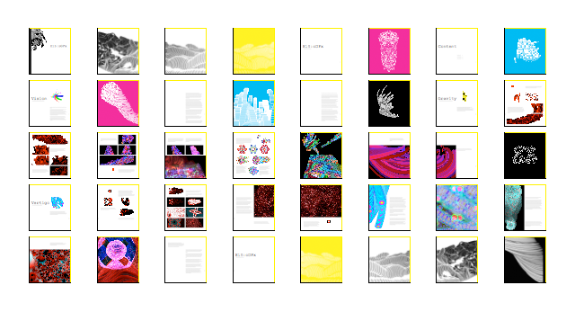
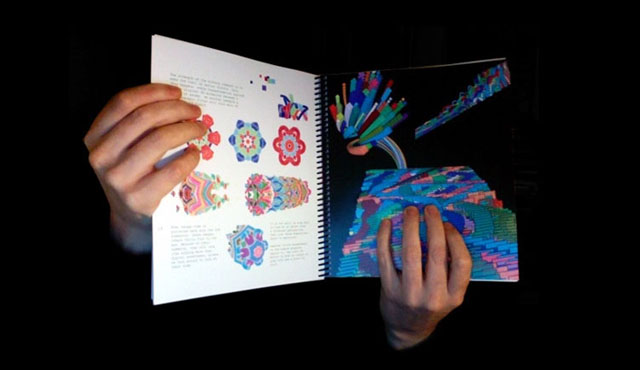

E15:oGFx is a tool to generate and explore 3D forms originating from 2D animations.
E15:oGFx, or simply oGFx, is an element of E15 -- a blanket descriptor for much of the work that took place in John Maeda's Physical Language Workshop between the years of 2007 and 2008 in the MIT Media Lab. E15:oGFx is, in fact, the first of such projects falling under the "E15" designation, and was developed by Kyle Buza and Luis Blackaller in the Summer of 2007.
The original motivation of E15:oGFx was to explore the set of 3D forms produced from procedurally generated 2D animations. E15:oGFx uses an embedded Python interpreter to provide a malleable programming interface for writing programs within it. By embedding a Python interpreter, we allow the user to update, modify, and interrogate the runtime state of the E15:oGFx program at any point during its execution. This is in contrast to the traditional "compile, run, debug, repeat" style of the majority of today's programming environments.
Like many of its livecoding siblings, E15:oGFx features solid support for user-defined GLSL-based shaders, as well as a mechanism for modifying shader parameters from within Python. We also take advantage of GPU-accelerated image manipulation through the use of Apple's CoreImage framework.
This video is running at 2x of its original speed.
You're invited to contribute to this gallery with your awesome graphical experiments. Please submit your script, a screenshot or two, and a description of what you did. Selected works will be featured here every month. Please email ofgx [at] mitplw [dot] com for submissions or questions. More code examples can be found in E15:web.
Why call these objects balls when they are actually squares? It doesn't matter. Just by replacing "rect" with "ellipse" in the "display" method of the Ball class definition will make the squares into balls during runtime, without interruptions, when the script is reevaluated. Python Metaclass programming does the trick.
#
# ogfx_ballSequence.py
# OpenGFX
#
# Created by buza+blackaller on 12/01/08.
# Copyright (c) 2007 MITPLW. All rights reserved.
#
from drawengine import *
sv1 = 0
sv2 = 0
sv3 = 0
sv4 = 0
sv5 = 0
sv6 = 0
mx = 0
my = 0
numBalls = 1
balls = []
#Size of the texture
size = 256
tsize(size)
class Ball(AutoReloader):
def __init__(self, xin, yin, din, idin, oin, r, g, b, a):
self.x = xin
self.y = yin
self.diameter = din
self.id = idin
self.others = oin
self.spring = 0.05
self.gravity = 0.03
self.vx = 1.5
self.vy = 0
self.r = r
self.a = a
self.g = g
self.b = b
def collide(self):
i = self.id + 1
while i < numBalls:
dx = self.others[i].x - self.x
dy = self.others[i].y - self.y
distance = sqrt(dx*dx + dy*dy)
minDist = self.others[i].diameter/2 + self.diameter/2
if (distance < minDist):
angle = atan2(dy, dx)
targetX = self.x + cos(angle) * minDist
targetY = self.y + sin(angle) * minDist
ax = (targetX - self.others[i].x) * self.spring
ay = (targetY - self.others[i].y) * self.spring
self.vx -= ax
self.vy -= ay
self.others[i].vx += ax
self.others[i].vy += ay
i = i + 1
def move(self):
self.vy += self.gravity
self.x += self.vx
self.y += self.vy
if (self.x > size - self.diameter):
self.x = size - self.diameter
self.vx *= -0.9
elif (self.x < 0):
self.x = 0
self.vx *= -0.9
if (self.y > size - self.diameter):
self.y = size - self.diameter
self.vy *= -0.9
elif (self.y < 0):
self.y = 0
self.vy *= -0.9
def display(self):
color(self.r, self.g, self.b, self.a)
stroke(self.r/4, self.g/4, self.b/4, self.a/2)
rect(self.x, self.y, self.diameter, self.diameter)
for i in range(numBalls):
balls.append(Ball(random()*size, random()*size, randrange(size/16, size/8), i, balls, random(), random(), random(), random()+0.7))
balls[0].r = 0.8
balls[0].g = 0.0
balls[0].b = 0.0
balls[0].a = 0.8
a=0
linewidth(4)
blendmode(0,2)
envcolor(0,0,0)
def draw():
global balls, numBalls, sv1, sv2, sv3, sv4, sv5, sv6, a
stroke(1,1,1,1)
for i in range(numBalls):
balls[i].gravity=sin(a)
balls[i].collide()
balls[i].move()
balls[i].display()
a+=0.02
state = 0
doArray = []
doArray.append(lambda : doStep1())
doArray.append(lambda : doStep2())
doArray.append(lambda : doStep3())
doArray.append(lambda : doStep4())
doArray.append(lambda : doStep5())
doArray.append(lambda : doStep6())
doArray.append(lambda : doStep7())
doArray.append(lambda : doStep8())
undoArray = []
undoArray.append(lambda : undoStep1())
undoArray.append(lambda : undoStep2())
undoArray.append(lambda : undoStep3())
undoArray.append(lambda : undoStep4())
undoArray.append(lambda : undoStep5())
undoArray.append(lambda : undoStep6())
undoArray.append(lambda : undoStep7())
undoArray.append(lambda : undoStep8())
print "Use the left & right arrow keys to step through this animation sequence of a simple bouncing ball animation.\n"
def onRight():
global state, doArray
if state == 8:
return
func = doArray[state]
state = state + 1
func()
def onLeft():
global state, undoArray
if state == 0:
return
func = undoArray[state-1]
state = state - 1
if state < 0:
state = 0
func()
def doStep1():
print "Doing Step 1 :: Applying this history command of 100 frames."
history(150, 0.033, 0)
def undoStep1():
print "Undoing Step 1 :: Removing the history command. Displaying only one animation frame."
history(1, 0.05, 0)
def doStep2():
print "Doing Step 2 :: Adding 4 balls to the animation."
global numBalls, balls
numBalls = 5
for i in range(numBalls):
balls.append(Ball(random()*size, random()*size, randrange(size/16, size/8), i, balls, random(), random(), random(), random()+0.7))
def undoStep2():
print "Undoing Step 2 :: Leaving only one ball in the animation."
global numBalls, balls
numBalls = 1
balls = balls[:1]
def doStep3():
#Angle the camera to see perspective.
print "Doing Step 3 :: Changing the perspective. Note you can also use the scroll wheel and shift key to navigate the scene."
camera(-1.0, 0.0, -1.0, 7.0, 0.0, 1.0)
def undoStep3():
#Straighten out the camera.
print "Undoing Step 3 :: Resetting the perspective."
camera(0.0, 0.0, -1.0, 0.0, 0.0, 1.8)
def doStep4():
print "Doing Step 2 :: Adding 20 balls to the animation."
global numBalls, balls
numBalls = 25
for i in range(numBalls):
balls.append(Ball(random()*size, random()*size, randrange(size/16, size/8), i, balls, random(), random(), random(), random()+0.7))
def undoStep4():
print "Undoing Step 2 :: Leaving only 10 balls in the animation."
global numBalls, balls
numBalls = 5
balls = balls[:5]
def doStep5():
print "Doing Step 4 :: Applying a kaleidoscope filter."
camera(-1.0, 0.0, -1.0, 3.5501196384429932, 0.0, -2.1374876499176025)
kaleidoscope("mykaleidoscope", { "center" : [128, 128] })
def undoStep5():
print "Undoing Step 4 :: Removing the kaleidoscope filter."
removeFilter("mykaleidoscope")
camera(-1.0, 0.0, -1.0, 7.0, 0.0, 1.0)
def doStep6():
print "Doing Step 5 :: Applying a Gaussian blur, edges and saturation filters."
gaussianblur("myblur", {"radius" : 3.0})
edges("myedges", {"intensity" : 8.0})
colorcontrols("mycolorcontrols", {"saturation" : 6.0})
def undoStep6():
print "Undoing Step 5 :: Removing the Gaussian blur, edges and saturation filters."
removeFilter("myblur")
removeFilter("myedges")
removeFilter("mycolorcontrols")
def doStep7():
print "Doing Step 6 :: Applying a Pixellation filter."
pixellate("mypixellate", {"scale" : 12})
def undoStep7():
print "Undoing Step 6 :: Removing the Pixellation filter."
removeFilter("mypixellate")
def doStep8():
print "Doing Step 10 :: Back to origin."
undoStep7()
undoStep6()
undoStep5()
undoStep4()
undoStep3()
undoStep2()
undoStep1()
def undoStep8():
print "Undoing Step 10 :: Back to 10."
doStep1()
doStep2()
doStep3()
doStep4()
doStep5()
doStep6()
doStep7()
A version of this experiment was featured during the keynote presentation of FlashForward 2007 in Boston.
#
# oGFx_vertigoSequence.py
# OpenGFX
#
# Created by blackaller+buza on 12/01/08.
# Copyright (c) 2007 MITPLW. All rights reserved.
#
from drawengine import *
from math import *
#Size of the texture
size = 256
tsize(size)
#setup globals
a=0
b=0
c=250
width=256
height=256
radiusX=0
radiusY=0
period=7
# filters
#root.gaussianblur("radius",10)
#root.colorcontrols("saturation",20)
#root.edges("intensity",6)
#root.pixellate("scale",6)
# filter removals
#root.removeFilter("gaussianblur", lambda: del_gaussianblur())
#root.removeFilter("colorcontrols", lambda: del_colorcontrols())
#root.removeFilter("edges", lambda: del_edges())
#root.removeFilter("pixellate", lambda: del_pixellate())
blendmode(0,2)
envcolor(1,1,1)
numCircles = 1
colorExterior = [0,1,1,1]
colorMiddle = [1,0,1,1]
colorInterior = [1,1,0,1]
def draw():
global numCircles
#lightdirection(20*cos(a/10),20*sin(a/10),60,1)
global a,b,c, width, height, radiusX, radiusY, period
background(1,1,1,0)
linewidth(5)
stroke(0,0,1,0.3)
radiusX=5+abs(10*sin(c))
radiusY=5+abs(10*sin(c))
# custom function calls
for i in range(numCircles):
radiusX=i+5+abs(10*sin(c))
radiusY=i+5+abs(10*sin(c))
display (width+(200*sin((a))),height+(200*sin((b))))
display (width+(200*sin((a+pi/ period*i))),height+(200*sin((b+pi/ period*i))))
display (width+(200*sin(-(a+2*pi/ period*i))),height+(200*sin((b+2*pi/ period*i))))
display (width+(200*sin((-a))),height+(200*sin((-b))))
display (width+(200*sin(-(a+pi/ period*i))),height+(200*sin(-(b+pi/ period*i))))
display (width+(200*sin((a+2*pi/ period*i))),height+(200*sin(-(b+2*pi/ period*i))))
a=a+0.1
b=b+0.15
c=c+0.025
period=sin(period/2) + period/2 +0.01
# custom function definition
# custom function definition
def display(x,y):
push()
translate(x/2,y/2)
color(colorExterior[0],colorExterior[1],colorExterior[2],colorExterior[3])
ellipse(-1.5 * radiusX,-1.5 * radiusY, 3 * radiusX, 3 * radiusY)
color(colorMiddle[0],colorMiddle[1],colorMiddle[2],colorMiddle[3])
ellipse(-radiusX,-radiusY, 2 * radiusX, 2 * radiusY)
color(colorInterior[0],colorInterior[1],colorInterior[2],colorInterior[3])
ellipse(0.5*-radiusX,0.5*-radiusY, radiusX, radiusY)
pop()
state = 0
doArray = []
doArray.append(lambda : doStep1())
doArray.append(lambda : doStep2())
doArray.append(lambda : doStep3())
doArray.append(lambda : doStep4())
doArray.append(lambda : doStep5())
doArray.append(lambda : doStep6())
doArray.append(lambda : doStep7())
doArray.append(lambda : doStep8())
doArray.append(lambda : doStep9())
doArray.append(lambda : doStep10())
undoArray = []
undoArray.append(lambda : undoStep1())
undoArray.append(lambda : undoStep2())
undoArray.append(lambda : undoStep3())
undoArray.append(lambda : undoStep4())
undoArray.append(lambda : undoStep5())
undoArray.append(lambda : undoStep6())
undoArray.append(lambda : undoStep7())
undoArray.append(lambda : undoStep8())
undoArray.append(lambda : undoStep9())
undoArray.append(lambda : undoStep10())
print "Use the left & right arrow keys to step through this animation sequence of spinning discs.\n"
def onRight():
global state, doArray
if state == 10:
print "Nothing happens after Step 10."
return
func = doArray[state]
state = state + 1 % 10
func()
def onLeft():
global state, undoArray
if state == 0:
print "Nothing happens before Step 1."
return
func = undoArray[state-1]
state = state - 1 % 10
if state < 0:
state = 0
func()
def doStep1():
print "Doing Step 1 :: Adding more circles to the animation."
global numCircles
numCircles = 5
def undoStep1():
print "Undoing Step 1 :: Removing additional circles."
global numCircles
numCircles = 1
def doStep2():
print "Doing Step 2 :: Applying this history command of 200 frames and incremental rotation."
history(200, 0.05, 1.0)
def undoStep2():
print "Undoing Step 2 :: Removing the history command. Displaying only one animation frame."
history(1, 0.05, 0)
def doStep3():
#Angle the camera to see perspective.
print "Doing Step 3 :: Changing the perspective. Note you can also use the scroll wheel and holding down the cmd key to navigate the scene."
camera(-1.0, 0.0, -1.0, 7.0, 0.0, 1.0)
def undoStep3():
#Straighten out the camera.
print "Undoing Step 3 :: Resetting the perspective."
camera(0.0, 0.0, -1.0, 0.0, 0.0, 1.8)
def doStep4():
print "Doing Step 4 :: Applying a Gaussian blur filter."
gaussianblur("myblur", {"radius" : 10})
def undoStep4():
print "Undoing Step 4 :: Removing the Gaussian blur filter."
removeFilter("myblur")
def doStep5():
print "Doing Step 5 :: Applying a saturation effect."
colorcontrols("mycolorcontrols", {"saturation" : 20})
def undoStep5():
print "Undoing Step 5 :: Removing the saturation effect."
removeFilter("mycolorcontrols")
def doStep6():
print "Doing Step 6 :: Setting the background color to black."
envcolor(0, 0, 0)
def undoStep6():
print "Undoing Step 6 :: Setting the background color to white."
envcolor(1, 1, 1)
def doStep7():
print "Doing Step 7 :: Changing the blending."
camera(0.0, 0.0, -1.0, 0.0, 0.0, -3.8) # going in
blendmode(3,0)
def undoStep7():
print "Undoing Step 7 :: Reverting the blending."
camera(-1.0, 0.0, -1.0, 7.0, 0.0, 1.0)
blendmode(0,2)
def doStep8():
print "Doing Step 8 :: Applying an edge and edgeworks combo filter."
edgework("myedgework", {"radius" : 8})
edges("myedges", {"intensity" : 6})
camera(-2.0, 0.0, -2.0, 4.0, 0.0, -6.0) # closer
def undoStep8():
print "Undoing Step 8 :: Removing the edge and edgeworks filter."
removeFilter("myedgework")
removeFilter("myedges")
camera(0.0, 0.0, -1.0, 0.0, 0.0, -3.8)
def doStep9():
print "Doing Step 9 :: Reverting the blending."
blendmode(0,2)
def undoStep9():
print "Undoing Step 9 :: Changing back to custom blending."
blendmode(3,0)
def doStep10():
print "Doing Step 10 :: Back to origin."
undoStep9()
undoStep8()
undoStep7()
undoStep6()
undoStep5()
undoStep4()
undoStep3()
undoStep2()
def undoStep10():
print "Undoing Step 10 :: Back to 10."
doStep2()
doStep3()
doStep4()
doStep5()
doStep6()
doStep7()
doStep8()
doStep9()
This experiment is a relatively simple application of Quartz2D's Quadratic Bezier splines.
#
# QuadraticCurves.py
# OpenGFX
#
# Created by blackaller on 10/24/07.
# Copyright (c) 2007 MITPLW. All rights reserved.
#
from drawengine import *
from math import *
import random
size = 256
tsize(size)
class Polygon:
global a, pipi, lalpha, falpha
def __init__(self, numVertices, radius):
self.n = numVertices
self.r = radius
def setFill(self,r,g,b,a):
color(r,g,b,a)
def setLine(self,r,g,b,a):
stroke(r,g,b,a)
def displayPolygon(self):
oscillateradius = radiusOscillator(self.r, a, 16, 0)
moveto(oscillateradius,0)
beginline()
for i in range(self.n):
k=1+i
controlPointX = ((50*sin(a*k))+oscillateradius) * cos((k*pipi)/self.n - (pi)/self.n)
controlPointY = ((50*sin(a*k))+oscillateradius) * sin((k*pipi)/self.n - (pi)/self.n)
quadcurve(controlPointX, controlPointY, oscillateradius * cos(((k-1/2)*pipi)/self.n), oscillateradius * sin(((k-1/2)*pipi)/self.n))
closeline()
for i in range(self.n):
k=1+i
stroke(0,0,0,0)
color(float(i)/self.n,float(i)/self.n,0.8,0.4)
controlPointX = ((50*sin(a*k))+oscillateradius) * cos((k*pipi)/self.n - (pi)/self.n)
controlPointY = ((50*sin(a*k))+oscillateradius) * sin((k*pipi)/self.n - (pi)/self.n)
ellipse(controlPointX, controlPointY,2 + 8*sin(a*k),2 + 8*sin(a*k))
history(1,0.05, 1)
linejoin(2)
linewidth(4)
pipi = 2*pi
a=2
width = 256
height = 256
lalpha = 0.8
falpha = 0.2
p= Polygon(13, (width/8) * (1+sin(a)) + 10 )
envcolor(1,1,1)
blendmode(0,2)
def draw():
global a, width, height, lalpha, falpha, p
background(1,1,1,0)
push()
translate(width/2,height/2)
push()
rotate(a)
p.setFill(cos(sin(a)), sin(cos(a)), sin(a), falpha)
p.setLine(1, cos(a/4), sin(a/4), lalpha)
p.displayPolygon()
pop()
pop()
a+=0.005
def superFormulaRadius(angle, m, n1, n2, n3):
rad = ( abs( cos(m*angle/4)**n2 ) + abs( cos(m*angle/4)**n3 ) )**(-1/n1)
return rad
def radiusRandomizer(radius, range):
rand = float(random.randint(0,100))
rad = radius - range * cos(rand)
return rad
def radiusOscillator(radius, osc, range, var):
rand = float(random.randint(0,var))
rad = radius - radius * cos(osc+rand) /range
return rad
state = 0
doArray = []
doArray.append(lambda : doStep1())
doArray.append(lambda : doStep2())
doArray.append(lambda : doStep3())
doArray.append(lambda : doStep4())
doArray.append(lambda : doStep5())
doArray.append(lambda : doStep6())
doArray.append(lambda : doStep7())
doArray.append(lambda : doStep8())
doArray.append(lambda : doStep9())
doArray.append(lambda : doStep10())
undoArray = []
undoArray.append(lambda : undoStep1())
undoArray.append(lambda : undoStep2())
undoArray.append(lambda : undoStep3())
undoArray.append(lambda : undoStep4())
undoArray.append(lambda : undoStep5())
undoArray.append(lambda : undoStep6())
undoArray.append(lambda : undoStep7())
undoArray.append(lambda : undoStep8())
undoArray.append(lambda : undoStep9())
undoArray.append(lambda : undoStep10())
print "Use the left and right arrow keys to step through this animation sequence of quadratic curves.\n"
def onRight():
global state, doArray
if state == 10:
print "Nothing happens after Step 10."
return
func = doArray[state]
state = state + 1
func()
def onLeft():
global state, undoArray
if state == 0:
print "Nothing happens before Step 1."
return
func = undoArray[state-1]
state = state - 1
if state < 0:
state = 0
func()
def doStep1():
global lalpha, falpha, a
print "Doing Step 1 :: Applying this history command of 200 frames and incremental rotation."
lalpha = 0.1
falpha = 0.01
history(200, 0.02, 1)
def undoStep1():
global lalpha, falpha
print "Undoing Step 1 :: Removing the history command. Displaying only one animation frame."
lalpha = 0.8
falpha = 0.2
history(1, 0.02, 0)
def doStep2():
#Angle the camera to see perspective.
print "Doing Step 2 :: Changing the perspective. Note you can also use the scroll wheel and holding down the cmd key to navigate the scene."
camera(-1.0, 0.0, -1.0, 3.5501196384429932, 0.0, -2.1374876499176025)
def undoStep2():
#Straighten out the camera.
print "Undoing Step 2 :: Resetting the perspective."
camera(0.0, 0.0, -1.0, 0.0, 0.0, 1.8)
def doStep3():
print "Doing Step 3 :: Invert background."
envcolor(0, 0, 0)
def undoStep3():
print "Undoing Step 3 :: Invert back."
envcolor(1, 1, 1)
def doStep4():
print "Doing Step 4 :: Applying a Crystallization filter."
crystallize("mycrystal", {"radius" : 4})
def undoStep4():
print "Undoing Step 4 :: Removing the Crystallization filter."
removeFilter("mycrystal")
def doStep5():
print "Doing Step 5 :: Applying a gaussian blur effect."
gaussianblur("myblur", {"radius" : 2})
def undoStep5():
print "Undoing Step 5 :: Removing the gaussian blur effect."
removeFilter("myblur")
def doStep6():
print "Doing Step 6 :: Applying an edge and saturation filters."
edges("myedges", {"intensity" : 8})
colorcontrols("mycolorcontrols", {"saturation" : 10})
def undoStep6():
print "Undoing Step 6 :: Removing the edge and saturation filters."
removeFilter("myedges")
removeFilter("mycolorcontrols")
def doStep7():
print "Doing Step 7 :: Navigating inside."
camera(0.0, 0.0, -1.0, 0.0, 0.0, -3.3) # going in
def undoStep7():
print "Undoing Step 7 :: Navigating back out."
camera(-1.0, 0.0, -1.0, 3.5501196384429932, 0.0, -2.1374876499176025)
def doStep8():
print "Doing Step 7 :: Changing to screen blend mode."
blendmode(0,8)
def undoStep8():
print "Undoing Step 7 :: Removing screen blend mode."
blendmode(0,2)
def doStep9():
global lalpha, falpha
print "Doing Step 9 :: Changing to minmax blend mode."
lalpha = 0.4
falpha = 0.01
blendmode(3,0)
def undoStep9():
global lalpha, falpha
print "Undoing Step 9 :: Removing minmax blend mode."
lalpha = 0.1
falpha = 0.01
blendmode(0,8)
def doStep10():
print "Doing Step 10 :: Back to origin."
undoStep9()
undoStep8()
undoStep7()
undoStep6()
undoStep5()
undoStep4()
undoStep3()
undoStep2()
undoStep1()
def undoStep10():
print "Undoing Step 10 :: Back to 10."
doStep1()
doStep2()
doStep3()
doStep4()
doStep5()
doStep6()
doStep7()
doStep8()
doStep9()
E15:oGFx is a work in progress, and so is this api. New methods and descriptions will be periodically added to this list. Check out the tutorial section and featured scripts for examples of usage. More code examples can be found in E15:web.
Important. This setup method is always required.
- Method name: tsize(int pot)
- Values: Powers of two
- Default: null
- Description: Sets the texture size of the Quartz2D context to be mapped onto the OpenGL geometry
# Setting the texture size to 256 tsize(256)
- Method name: history(int length, float gap, float rotation)
- Ranges:
- length is not recommended to be larger than 200
- gap: [0, infinite]
- rotation: any real number
- Default: history(1, 0, 0)
- Description: Draws the 2D animation history onto a progression of OpenGL objects
# Sets a 12 frame history with a rotation ratio of 45 degrees history(12, 1, 45)
- Method name: draw()
- Description: Defines a drawing loop that runs at the same time over the Quartz2D context that is used as a dynamic texture and over the OpenGL 3D context. It is required to be custom defined in every script.
#
# epoch.py
# oGFx
#
# Created by blackaller on 02/13/09
# Copyright (c) 2007 MITPLW. All rights reserved.
#
from drawengine import *
from time import *
#Size of the texture
size = 256
tsize(size)
history(32, 0.01, 0)
# draw() method definition
def draw():
global a
background(1,0,0,0)
fontcolor(1,time() % 2,0,0.8)
font("Courier", 32, 0.0, 0.0)
text( str(time()), 0, 128) # draw epoch time on the Quartz2D context
print time() # print epoch time
- Method name: imgload(string "URL", x, y)
- Description: Loads an image and draws it in the specified (x, y) coordinates.
from drawengine import *
#Size of the texture
size = 256
tsize(size)
history(10, 0.02, 6)
# draw() method definition
def draw():
background(0,1,1,0)
# loading and image from the specified URL
imgload("http://pixs.media.mit.edu/picture/image/9589/preview/5000x5000.png", 22, 22)
- Method name: envcolor(float red, float green, float blue)
- Range: [0,1] for all fields
- Default: envcolor(0, 0, 0)
- Description: Sets the background color of OpenGL 3D context
# Drawing a white OpenGL background envcolor(1, 1, 1)
Please consult the OpenGL documentation for a description of the available set of OpenGL blend equations and blend functions.
- Method name: blendmode(int blendEq, int blendFunc)
- blendEq Values:
- 0 = glBlendEquation(GL_FUNC_ADD)
- 1 = glBlendEquation(GL_FUNC_REVERSE_SUBTRACT)
- 2 = glBlendEquation(GL_MIN)
- 3 = glBlendEquation(GL_MAX)
- 4 = glBlendEquation(GL_FUNC_SUBTRACT)
- blendFunc Values:
- 0 = glBlendFunc(GL_SRC_ALPHA, GL_ONE_MINUS_SRC_ALPHA)
- 1 = glBlendFunc(GL_ZERO, GL_ONE_MINUS_SRC_ALPHA)
- 2 = glBlendFunc(GL_ONE, GL_ONE_MINUS_SRC_ALPHA)
- 3 = glBlendFunc(GL_ONE_MINUS_SRC_ALPHA, GL_ONE_MINUS_SRC_ALPHA)
- 4 = glBlendFunc(GL_SRC_COLOR, GL_ONE_MINUS_SRC_ALPHA)
- 5 = glBlendFunc(GL_ONE_MINUS_SRC_COLOR, GL_ONE_MINUS_SRC_ALPHA)
- 6 = glBlendFunc(GL_DST_COLOR, GL_ONE_MINUS_SRC_ALPHA)
- 7 = glBlendFunc(GL_DST_ALPHA, GL_ONE_MINUS_SRC_ALPHA)
- 8 = glBlendFunc(GL_ONE, GL_ONE_MINUS_SRC_COLOR)
- 9 = glBlendFunc(GL_ONE_MINUS_SRC_ALPHA, GL_ONE_MINUS_SRC_COLOR)
- Default: blendmode(0, 0)
- Description: Globally sets the OpenGL blend equation and blend function
# Screen blending mode blendmode(0, 8)
- Method name: background(float red, float green, float blue, float alpha)
- Range: [0,1] for all fields
- Default: background(0, 0, 0, 0)
- Description: Fills the background of the Quartz2d context with the selected color
def draw(): # Red transparent background background(1, 0, 0, 0.5)
- Method name: color(float red, float green, float blue, float alpha)
- Range: [0,1] for all fields
- Default: color(0, 0, 0, 0)
- Description: Sets the fill color of Quartz2D objects drawn after called
def draw(): # Yellow fill color(1, 1, 0, 1) rect(64, 64, 128, 128) # Green transparent fill color(0, 1, 0, 0.5) ellipse(128, 128, 64, 64)
- Method name: stroke(float red, float green, float blue, float alpha)
- Range: [0,1] for all fields
- Default: stroke(0, 0, 0, 0)
- Description: Sets the stroke color of Quartz2D objects drawn after called
def draw(): # Red outline stroke(1, 0, 0, 1) rect(64, 64, 128, 128) # White transparent outline stroke(1, 1, 1, 0.5) ellipse(128, 128, 64, 64)
- Method name: linewidth(int w)
- Range: Positive integer, measured in pixels relative to the Quartz2D context
- Default: linewidth(1)
- Description: Sets the stroke width of Quartz2D objects drawn after called
def draw(): # 20px thick white outline stroke(1, 1 , 1, 1) linewidth(20) rect(64, 64, 128, 128)
- Method name: linejoin(int jtype)
- Ranges:
- 1 = kCGLineJoinMiter
- 2 = kCGLineJoinRound
- 3 = kCGLineJoinBevel
- Default: linejoin(1)
- Description: Sets the line join type according to Quartz2D specifications
def draw(): # round join followed by a typical line drawing sequence stroke(1, 1 , 1, 1) linewidth(20) linejoin(2) # the following code should draw a rectangle triangle with rounded corners moveto(64, 64) beginline() line(64, 128) line(128, 128) closeline()
- Method name: linecap(int ctype)
- Ranges:
- 1 = kCGLineCapButt
- 2 = kCGLineCapRound
- 3 = kCGLineCapSquare
- Default: linecap(1)
- Description: Sets the line cap type according to Quartz2D specifications
def draw(): # round cap followed by a typical line drawing sequence stroke(1, 1 , 1, 1) linewidth(20) linecap(2) # the following code should draw a horizontal line with round caps moveto(64, 64) beginline() line(64, 128) endline()
- Method name: moveto(int x, int y)
- Range: Positive integer 2D coordinates, measured in pixels relative to the Quartz2D context
- Description: Sets the initial position for a line drawing call sequence
# a typical line drawing sequence starts with moveto # the following code should draw a rectangle corner def draw(): moveto(64, 64) beginline() line(64, 128) line(128, 128) endline()
- Method name: beginline()
- Description: Path initializer
def draw(): moveto(64, 64) beginline() line(64, 128) line(128, 128) endline()
- Method name: line(px, py)
- Range: Positive integer 2D coordinates, measured in pixels relative to the Quartz2D context
- Description: Draws a line segment from the previous 2D point in the stack to the coordinate values specified by (px, py).
def draw(): moveto(64, 64) beginline() line(64, 128) line(128, 128) endline()
- Method name: quadcurve(cx, cy, px, py)
- Range: Pair of positive integer 2D coordinates, measured in pixels relative to the Quartz2D context
- Description: Draws a quadratic Bezier segment from the previous 2D point in the stack to the coordinate values specified by (px, py), using the control point (cx, cy).
def draw(): background(1,1,1,1) linecap(2) moveto(128, 64) beginline() quadcurve(256, 0, 196,128) quadcurve(256, 256, 128, 196) quadcurve(0, 256, 64, 128) endline()
- Method name: endline()
- Description: open Path finisher
def draw(): moveto(64, 64) beginline() line(64, 128) line(128, 128) endline()
- Method name: closeline()
- Description: Closed Path finisher
def draw(): moveto(64, 64) beginline() line(64, 128) line(128, 128) closeline()
- Method name: rect(bottomRightCornerX, bottomRightCornerY, w, h)
- Range: Pair of positive integer 2D coordinates, measured in pixels relative to the Quartz2D context
- Description: Drawing rectangles
def draw(): background(0, 0, 1, 0.4) for i in range(8): linewidth(i + 1) color(1 - i % 2, 0, i % 2, 0.4) stroke(i % 2, 0, 1 -i % 2, 0.4) rect(64 + i*8, 64 + i*12, 8 + i*12, 8 + i*4)
- Method name: ellipse(bottomRightCornerX, bottomRightCornerY, w, h)
- Range: Pair of positive integer 2D coordinates, measured in pixels relative to the Quartz2D context
- Description: Drawing ellipses
def draw(): background(0, 0, 1, 0.4) for i in range(8): linewidth(i + 1) color(1 - i % 2, 0, i % 2, 0.4) stroke(i % 2, 0, 1 -i % 2, 0.4) ellipse(128 + i*4, 128 + i*4, 8 + i*12, 8 + i*12) ellipse(128 - i*4, 128 - i*4, - 8 - i*12, - 8 - i*12)
- Method name: push()
- Description: Pushes the current transformation matrix onto the matrix stack. push() saves the current coordinate system to the stack.
- Method name: pop()
- Description: Pops the current transformation matrix onto the matrix stack. pop() recovers the previous coordinate system from the stack.
# # miniorrery.py # oGFx # # Created by blackaller on 02/08/09 # Copyright (c) 2007 MITPLW. All rights reserved. # from drawengine import * size = 256 tsize(size) blendmode(0,2) history(1, 0.01, 0) a = 0 width = 256 height = 256 def draw(): global a,width,height background(0,1,1,0) linewidth(2) push() # Push coordinate system into the transformation stack translate(width/2,height/2) # Translate origin from corner to center rotate(-a/2) # Apply parent rotation push() # Push coordinate system into the transformation stack translate(-25,-25) # Match sun center with current origin translate(8,8) # Offset a bit to experience sun subtle rotation color(1,1,1,0.1) stroke(1,1,1,0.5) ellipse(0,0,50,50) # Paint the sun pop() # Pop current coordinate system out of the transformation stack # The following transformations wont affect the sun, etc... rotate(a) translate(40,40) push() rotate(-a*2) translate(-10,-10) color(1,1,0,0.1) stroke(1,1,0,0.5) ellipse(0,0,20,20) pop() rotate(-a*2) translate(12,12) push() rotate(a*2) translate(-6,-6) color(1,0,1,0.1) stroke(1,0,1,0.5) ellipse(0,0,12,12) pop() pop() a=a+0.05
- Method name: translate(int x,iny y)
- Range: 2D coordinates
- Description: Applies a translation transform. The draw() loop DOES NOT RESET the transformation matrix, so every transform must be pushed and popped or it will be accumulated each time draw() is called.
from drawengine import * from math import * size = 256 tsize(size) a = 0 def draw(): global a background(1,1,1,1) linewidth(2) color(0,0,1,0.8) stroke(1,0,0,0.8) push() translate(96 - sin(a)*64, 96 - sin(a)*64) ellipse(0,0,64,64) pop() a+=0.1
- Method name: rotate(float x)
- Range: angle in degrees
- Description: Applies a rotation transform. The draw() loop DOES NOT RESET the transformation matrix, so every transform must be pushed and popped or it will be accumulated each time draw() is called.
from drawengine import * from math import * size = 256 tsize(size) a = 0 def draw(): global a background(1,1,1,1) linewidth(2) color(0,0,1,0.8) stroke(1,0,0,0.8) push() translate(128,128) rotate(a) ellipse(0,0,64,64) pop() a+=0.1
- Method name: scale(float x,float y)
- Range: 2D coordinates
- Description: Applies a scale transform. The draw() loop DOES NOT RESET the transformation matrix, so every transform must be pushed and popped or it will be accumulated each time draw() is called.
from drawengine import * from math import * size = 256 tsize(size) a = 0 def draw(): global a background(1,1,1,1) linewidth(2) color(0,0,1,0.8) stroke(1,0,0,0.8) push() translate(128,128) scale(2*(2-sin(a)), 2*(2-sin(a))) push() translate(-16,-16) ellipse(0,0,32,32) pop() pop() a+=0.1
E15:oGFx features Python bindings to apply most of the image processing filters supported by Apple's CoreImage. A description of the pattern used to make the filter calls will be provided here, together with a few examples. It will not be hard to infer how to call any other filter by consulting Apple's CoreImage Filter Reference. Please email ogfx [at] mitplw [dot] com with questions if you have them.
A CoreImage filter needs to be evaluated in a number of parameters. E15:oGFx automatically takes care of the inputImage parameter. The rest of the parameters is passed to the filter as a dictionary of {"parameter" : value} mappings.
Assuming there is a generic CoreImage filter named CIFilterName with (CIImage inputImage, input1type input1, input2type input2, input3type input3) as its inputs, a general pattern for E15:oGFx filter application and removal can be outlined as follows:
# generic filter call
# inputValueMappings = {"input1" ; value1, "input2" ; value2, "input3" ; value3}
filtername(string "filterID", dict inputValueMappings)
# generic input values update, where X, Y can be 1, 2 or 3.
filterParams("filterID", {"inputX" : newX, "inputY" : newY})
# generic filter removal
removeFilter("filterID")
# the next few examples illustrate this pattern:
gaussianblur: CIGaussianBlur
-
inputRadius: (float radius)
- range [0.0, 100.0]
- description: gaussianblur radius
# filter
gaussianblur("myblur", {"radius" : 2.0})
# update
filterParams("myblur", {"radius" : 5.0})
# removal
removeFilter("myblur")
kaleidoscope: CIKaleidoscope
-
inputCount (float count)
- range [6.0, 64.0]
- default: 6.0
- description: kaleidoscope number of folds
-
inputCenter [int x, int y]
- default: [150, 150]
- description: kaleidoscope center
-
inputAngle (float angle)
- default: 0.0
- description: kaleidoscope angle for axis of reflection
# filter
kaleidoscope("mykaleidoscope", {"center" : [64, 64], "angle" : 30.0, "count" : 24.0})
# update
filterParams("mykaleidoscope", {"center" : [50, 50]})
# removal
removeFilter("mykaleidoscope")
colorcontrols: CIColorControls
-
inputSaturation (float saturation)
- default: 1.0
-
inputBrightness [float brightness]
- default: 0.0
-
inputContrast (float contrast)
- default: 1.0
# filter
colorcontrols("mycolorcontrols", {"saturation" : 6.0, "brightness" : 0.0, "contrast" : 1.0})
# update
filterParams("mycolorcontrols", {"saturation" : 8.0, "brightness" : 1.0, "contrast" : 3.0})
# remove
removeFilter("mycolorcontrols")
- Method name: make_program(str program_id)
- Description: Creates a program object with the specified string identifier.
# Creates an empty shader program.
make_program("kernel_program")
- Method name: make_shader(str program_id, str shader_id, str shader_type, str code)
- Description: Creates and compiles a shader object that is attached to the previously created program object using make_program().
# Create a simple fragment shader
make_program("simple_shader")
# Now create and attach the shader(s)
shader = """
void main (void) {
gl_FragColor = vec4(0.0, 1.0, 1.0, 1.0);
}
"""
make_shader("simple_shader", "s_shader", "fragment", shader)
# Now we're ready to actually attach the shader to a specific element
attach_program("demo", "simple_shader")
- Method name: attach_program(str elem_id, str program_id)
- Description: Attaches the program object specified by program_id to the specified displayable object.
# Create a simple fragment shader.
make_program("simple_shader")
# Now create and attach the shader(s).
shader = """
void main (void) {
gl_FragColor = vec4(0.0, 1.0, 1.0, 1.0);
}
"""
make_shader("simple_shader", "s_shader", "fragment", shader)
# Now we're ready to actually attach the shader to a specific element.
attach_program("demo", "simple_shader")
- Method name: shader_param(str program_id, str shader_id, str param, tuple values)
- Description: Updates the specified shader uniform value with the provided data.
# Create a simple fragment shader with a modifiable color uniform.
make_program("simple_shader")
# Now create and attach the shader(s).
shader = """
uniform float col;
void main (void) {
gl_FragColor = vec4(col, col, col, 1.0);
}
"""
make_shader("simple_shader", "s_shader", "fragment", shader)
# Now we're ready to actually attach the shader to a specific element.
attach_program("demo", "simple_shader")
# Change the value of the col parameter in the installed shader to 0.5
shader_param("simple_shader", "s_shader", "col", [0.5])
The simple tutorials featured here will get you started. Copy the code in red and paste it into your E15:oGFx Python interpreter for evaluation. If you need to request or submit a specific tutorial please contact us at the following email address: ofgx [at] mitplw [dot] com. More code examples can be found in E15:web.
It doesn't matter how complex it can be, every E15:oGFx script must keep the basic structure outlined here.
# # basic.py # oGFx # # Created by blackaller on 02/08/09 # Copyright (c) 2007 MITPLW. All rights reserved. # # Always import * from drawengine first: from drawengine import * # Other resources are optional: from random import * from math import * # Initialization of global variables: a = 0 # Texture size is a mandatory setup method: tsize(256) # Optional setup methods: blendmode(0,8) history(77, 0.2, 0) # Definition of the draw method: def draw(): global a background(1,1,1,0) color(1,1,1,0.1) stroke(1,1,1,0.05) linewidth(10) push() translate(64,64) centerX=random()*128 centerY=random()*128 rect(centerX, centerY, 64 * sin(a), 64 * sin(a)) pop() print(centerX, centerY) a += 0.1
Similar to other graphics programming environments, E15:ogfx requires the basic structure of a program to include a collection of setup calls and the definition of a draw method.
#
# helloworld.py
# oGFx
#
# Created by blackaller on 02/08/09
# Copyright (c) 2007 MITPLW. All rights reserved.
# External library calls:
from drawengine import *
from math import *
# Initialization of global variables:
a = 0
fontsize = 21.0
hello = '''
__ __ __ __ __
|__||_ | | / \ | |/ \|__)| | \
| ||__|__|__\__/ |/\|\__/| \ |__|__/
'''
# Setup methods [look for descriptions in the api section]:
tsize(512)
blendmode(0,2)
history(10, 0.2, 0)
# Definition of the draw method:
def draw():
global a, hello, fontsize
background(1,0,1,0.02)
color(1,0,0,1)
font("Monaco", fontsize, 0.0, 0.0)
lines=hello.split("\n")
i=0
push()
scale(3,3)
translate(200 - (a % 700), 0)
for line in lines:
fontcolor(1,1,0,1)
text(line, 0, 350 + i*fontsize)
fontcolor(0,1,1,1)
text(line, 0, 410 + i*fontsize)
print(line)
i+=1
pop()
a+=3
print(a)
There are two different ways to navigate inside the E15:oGFx OpenGL 3D view. The standard way controls the camera position and orientation using mouse input. On the other hand, custom methods can be defined making calls to the camera(x, y, z, eyeX, eyeY, eyeZ) method [consult the api for a description of this method]. The following list describes the combination of moves that can be achieved using a combination of mighty mouse scroll ball and key-press events:
- mightymousescrollballUp/Down = zoom
- shift + mightymousescrollballmouseUp/Down = pan up down
- mightymousescrollballLeft/Right = pan left-right
- command + mightymousescrollballUp/Down = tilt
- command + mightymousescrollballLeft/Right = roll
- spacebar = reset view
And the following list does the same thing in case you are using a multitouch trackpad in your macBook:
- twofingergestureUp/Down = zoom
- shift + twofingergestureUp/Down = pan up down
- twofingergestureLeft/Right = pan left-right
- command + twofingergestureUp/Down = tilt
- command + twofingergestureLeft/Right = roll
- spacebar = reset view
Use this simple script to navigate around the generated form.
# # staticsquare.py # oGFx # # Created by blackaller on 02/08/09. # Copyright (c) 2007 MITPLW. All rights reserved. # # Simple script that draws a square. from drawengine import * size = 512 tsize(size) history(20,1,15) def draw(): background(0,1,1,0.5) color(1,1,0,0.5) stroke(0,0,0,0.6) linewidth(20) rect(128,128,256,256)
The E15:oGFx api supports most of Apple's Quartz2D framework. This is a simple example to get you started with polygonal lines. Consult the api for descriptions of available method calls.
# # polylines.py # OpenGFX # # Created by blackaller on 10/24/07. # Copyright (c) 2007 MITPLW. All rights reserved. from drawengine import * size = 512 tsize(size) # Custom class definition class Point2D: def __init__(self, px, py): self.x = px self.y = py def draw(): background(1,1,1,0.5) linewidth(10) push() translate(64,64) color(0,1,1,0.8) stroke(1,1,1,0.6) # Drawing an open ended line polyline ([Point2D(0,0), Point2D(0,256), Point2D(256,256), Point2D(256,0)]) translate(128,128) color(1,1,0,0.8) stroke(0,0,0,0.6) # Drawing a polygon polygon ([Point2D(0,0), Point2D(0,256), Point2D(256,256), Point2D(256,0)]) pop() # Custom method definitions # Open ended line def polyline(doodle): moveto(doodle[0].x, doodle[0].y) beginline() if len(doodle) > 0: for p2D in doodle: line(p2D.x, p2D.y) endline() # Closed line or polygon def polygon(doodle): moveto(doodle[0].x, doodle[0].y) beginline() if len(doodle) > 0: for p2D in doodle: line(p2D.x, p2D.y) closeline()
Apple's CoreImage filters can be applied and removed. Apply the filters one by one or in groups. It is recommended to experiment with these filters on a base texture size of 256 so that the history(length, gap, rotation) command can be evaluated under a comfortable performance. For a list of filters and descriptions of parameters please consult the E15:oGFx api.
#
# These are some filter calls. Evaluate them ONLY after evaluating a script.
# Experiment with any possible combination (filter evaluation is not always commutative).
kaleidoscope("mykaleidoscope", {"center" : [150, 150], "count" : 6.0})
gaussianblur("myblur", {"radius" : 2.0})
edges("myedges", {"intensity" : 10.0})
colorcontrols("mycolorcontrols", {"saturation" : 6.0, "brightness" : 0.0, "contrast" : 1.0})
# Parameter update examples:
filterParams("mykaleidoscope", {"center" : [50, 50]})
filterParams("myblur", {"radius" : 5.0})
filterParams("myedges", {"intensity" : 3.0})
filterParams("mycolorcontrols", {"saturation" : 8.0, "brightness" : 1.0, "contrast" : 3.0})
# These are the corresponding filter removal calls:
removeFilter("mykaleidoscope")
removeFilter("myblur")
removeFilter("myedges")
removeFilter("mycolorcontrols")
#
# Evaluate this script first (or any other).
# Buza recommends using gaussianblur, edges and colorcontrols on the helloworld script.
#
# sticks.py
# E15:oGFx
#
# Another mini orbital system
# Created by blackaller on 8/02/07.
# Copyright (c) 2007 MITPLW. All rights reserved.
from drawengine import *
from math import *
# Recommended size of the texture for intensive filter processing:
size = 256
tsize(size)
blendmode(0,2)
history(100,0.1,0)
a=0
width=256
height=256
def draw():
global a,width,height
background(0,0,1,0)
color(1,1,1,1)
stroke(1,0,1,0)
a=a+0.05
push()
translate(width/2,height/2)
push()
rotate(a)
translate(-128,-5)
color(1,1,1,1)
rect(0,0,256,10)
pop()
rotate(a)
translate(-128,-5)
push()
rotate(-a*2)
translate(-128,-5)
color(1,1,0,.9)
rect(0,0,256,10)
pop()
rotate(-a*2)
translate(-128,-5)
push()
rotate(a*2)
translate(-128,-5)
color(1,0,1,.9)
rect(0,0,256,10)
pop()
pop()
The E15:ogfx book will feature a collection of visual wonders, aesthetic reflections and code recipes. And it will include a section with selected user works. More information about it will be posted here in the future.
Please email ofgx [at] mitplw [dot] com if you're interested in back ordering a copy or submitting work for consideration.
 